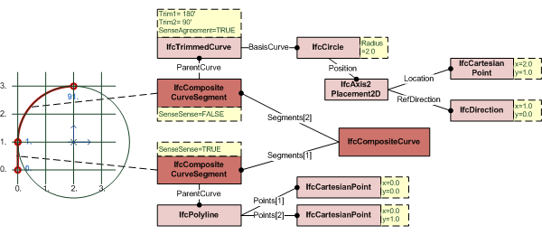
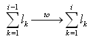
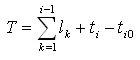
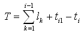
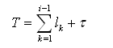

8.9.3.18 IfcCompositeCurve
| Courbe composite |
| Zusammengesetzte Kurve |
An IfcCompositeCurve is a continuous curve composed of curve segments.
Figure 317 illustrates an example of a composite curve.
 |
|
Figure 317 — Composite curve
|
Consider an IfcCompositeCurve having line segment and an arc segment. The line should be parameterized:
- IfcPolyline with start= 0.,0. end= 0.,1., SameSense= TRUE, parametric length = 1.
The arch should be parameterized:
- IfcTrimmedCurve with start= 180', end= 90', SameSense= FALSE, parametric length = 90.
Then the parameterization of the composite curve is:
- IfcCompositeCurve with 0. ≤ T ≤ 1. (line segment) and 1. ≤ T ≤ 91. (arc segment), parametric
length = 91.
NOTE Definition according to ISO 10303-42:
A composite curve is a collection of curves joined end-to-end. The individual segments of the curve are themselves
defined as composite curve segments. The parameterization of the composite curve is an accumulation of the parametric
ranges of the referenced bounded curves. The first segment is parameterized from 0 to
l1 and for i ≤ 2, the
ith segment is parameterized from:

where lk is the parametric length (i.e., difference
between maximum and minimum parameter values) of the curve underlying the kth
segment. Let T denote the parameter for the composite curve. Then, if the ith segment is not a
reparameterised composite curve segment, T is related to the parameter ti;
ti0 ≤ ti ≤ ti1; for the
ith segment by the equation:

if
Segments[i].SameSense = TRUE;
or by the equation:

if
Segments[i].SameSense = FALSE;
If the segments[i] is of type reparameterised composite curve segment,

where τ
is defined at reparameterized composite curve segment (see
IfcReparameterizedCompositeCurveSegment).
NOTE Entity adapted from composite_curve defined in ISO
10303-42.
HISTORY New entity in IFC1.0
Informal Propositions:
- The SameSense attribute of each segment correctly specifies the senses of the component curves. When
traversed in the direction indicated by SameSense, the segments shall join end-to-end.
Figure 318 illustrates composite curve usage.
 |
Figure 318 — Composite curve usage |
XSD Specification:
<xs:element name="IfcCompositeCurve" type="ifc:IfcCompositeCurve" substitutionGroup="ifc:IfcBoundedCurve" nillable="true"/>
<xs:complexType name="IfcCompositeCurve">
<xs:complexContent>
<xs:extension base="ifc:IfcBoundedCurve">
<xs:sequence>
<xs:element name="Segments">
<xs:complexType>
<xs:sequence>
<xs:element ref="ifc:IfcCompositeCurveSegment" maxOccurs="unbounded"/>
</xs:sequence>
<xs:attribute ref="ifc:itemType" fixed="ifc:IfcCompositeCurveSegment"/>
<xs:attribute ref="ifc:cType" fixed="list"/>
<xs:attribute ref="ifc:arraySize" use="optional"/>
</xs:complexType>
</xs:element>
</xs:sequence>
<xs:attribute name="SelfIntersect" type="ifc:logical" use="optional"/>
</xs:extension>
</xs:complexContent>
</xs:complexType>
EXPRESS Specification:
|
|
| NSegments | : | INTEGER := SIZEOF(Segments); |
| ClosedCurve | : | LOGICAL := Segments[NSegments].Transition <> Discontinuous; |
|
|
|
| CurveContinuous | : | ((NOT ClosedCurve) AND (SIZEOF(QUERY(Temp <* Segments | Temp.Transition = Discontinuous)) = 1)) OR ((ClosedCurve) AND (SIZEOF(QUERY(Temp <* Segments | Temp.Transition = Discontinuous)) = 0)); | | SameDim | : | SIZEOF( QUERY( Temp <* Segments | Temp.Dim <> Segments[1].Dim)) = 0; |
|
 EXPRESS-G diagram
EXPRESS-G diagram
Attribute Definitions:
| Segments | : | The component bounded curves, their transitions and senses. The transition attribute for the last segment defines the transition between the end of the last segment and the start of the first; this transition attribute may take the value discontinuous, which indicates an open curve. |
| SelfIntersect | : | Indication of whether the curve intersects itself or not; this is for information only.
|
| NSegments | : | The number of component curves. |
| ClosedCurve | : | Indication whether the curve is closed or not; this is derived from the transition code of the last segment. |
Formal Propositions:
| CurveContinuous | : | No transition code should be Discontinuous, except for the last code of an open curve. |
| SameDim | : | Ensures, that all segments used in the curve have the same dimensionality. |
Inheritance Graph:
|
|
| NSegments | : | INTEGER := SIZEOF(Segments); |
| ClosedCurve | : | LOGICAL := Segments[NSegments].Transition <> Discontinuous; |
|
 Link to this page
Link to this page